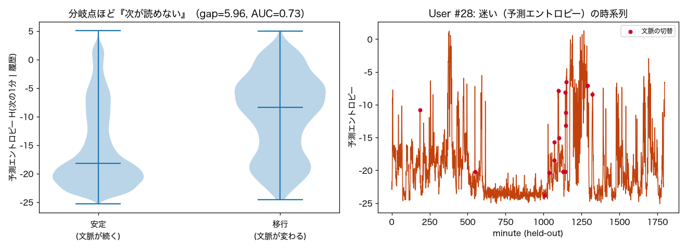

p(次の1分 | 履歴, user) の予測エントロピー。高い＝次の行動が読めない＝分岐点/移行。サプライズ(V3)とは別軸。
p(次の1分 | 履歴, user) を学習し、各時刻で flow からK本サンプルして予測エントロピー H=−(1/K)Σlog p を推定。サプライズ(V3)=実際の値が意外かに対し、エントロピー=これから何が起きるか読めないか＝分岐/迷いの度合い（別軸）。
条件付き Normalizing Flow（zuko NSF）で自動生成。 NF×生活データ探索シリーズの一部。